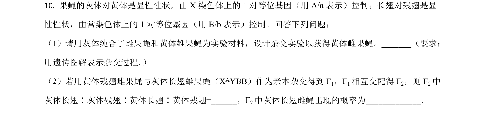
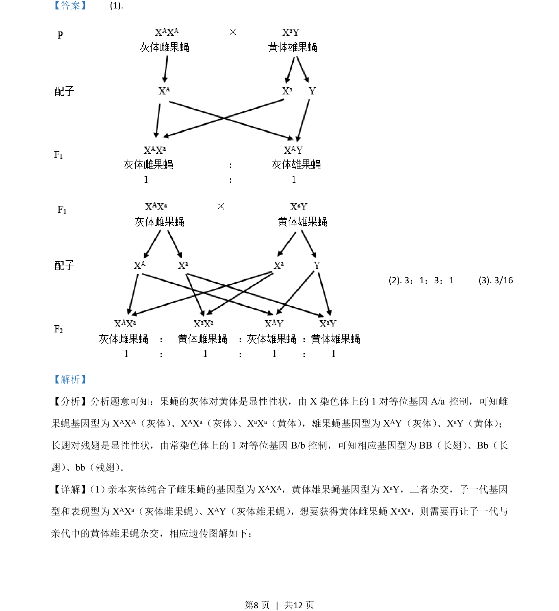
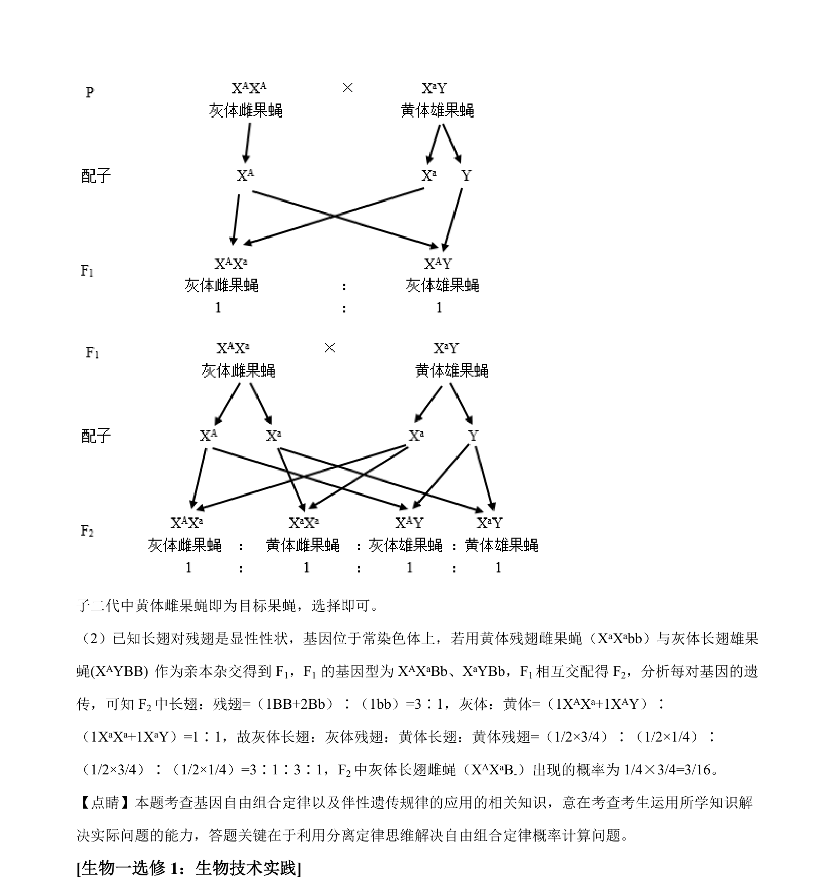

考点：伴性遗传 基因分离定律 自由组合定律 遗传图解

果蝇伴性遗传与常染色体遗传的杂交实验设计及子代比例计算


📄 原 PDF 第 8 页：
素材/真题/吉林/2008-2024·（吉林）生物高考真题/2021年高考生物试卷（全国乙卷）（解析卷）.pdf
【答案】 (1). (2). 3 ：1：3：1 (3). 3/16 【解析】 【分析】分析题意可知：果蝇的灰体对黄体是显性性状，由 X 染色体上的 1 对等位基因 A/a 控制，可知雌 果蝇基因型为 XAXA（灰体） 、XAXa（灰体） 、XaXa（黄体） ，雄果蝇基因型为XAY（灰体） 、XaY（黄体） ； 长翅对残翅是显性性状，由常染色体上的 1 对等位基因 B/b 控制，可知相应基因型为 BB（长翅） 、Bb（长 翅） 、bb（残翅） 。 【详解】 （1） 亲本灰体纯合子雌果蝇的基因型为XAXA，黄体雄果蝇基因型为 XaY，二者杂交，子一代基因 型和表现型为 XAXa（灰体雌果蝇） 、XAY（灰体雄果蝇） ，想要获得黄体雌果蝇XaXa，则需要再让子一代与 亲代中的黄体雄果蝇杂交，相应遗传图解如下：